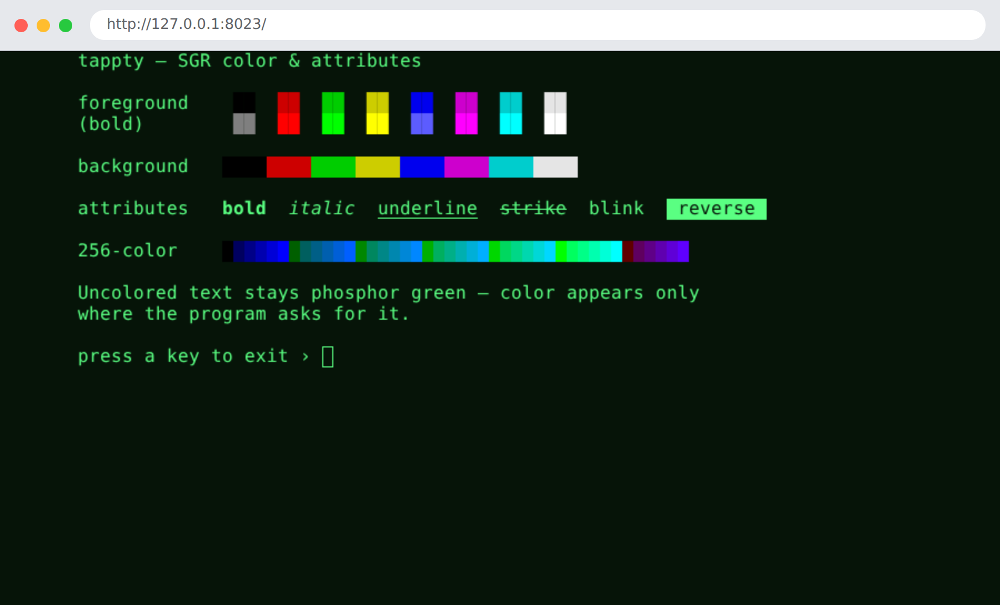
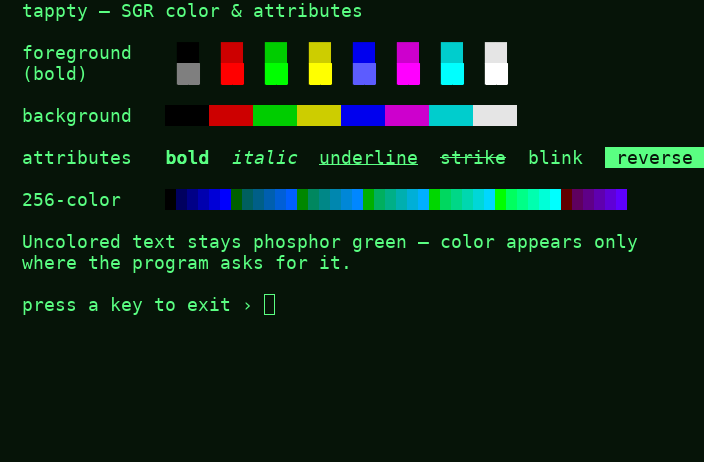
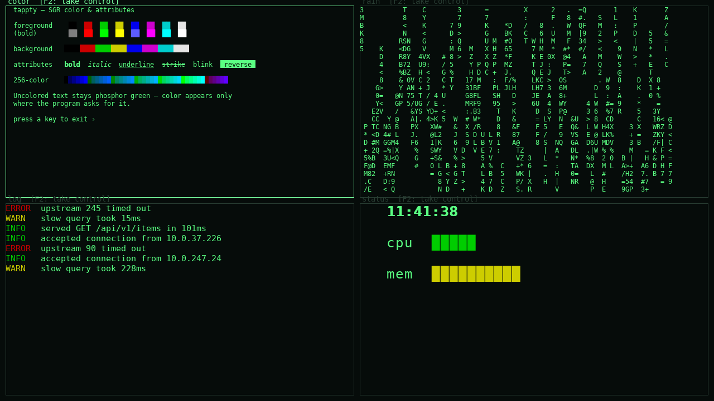
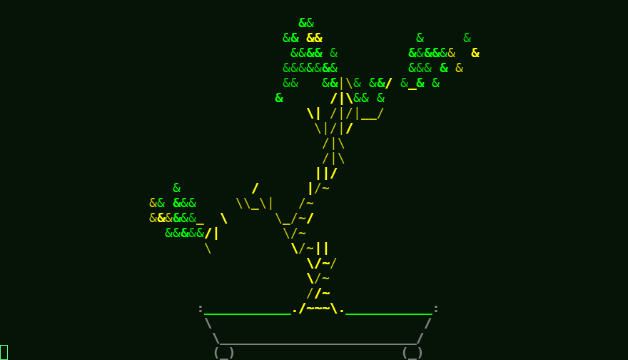

Documentation
Gallery
See it in action — screenshots of color, the digital-rain animation, and the compositor, each with runnable source.
What tappty looks like. Each demo below is a runnable single-file app in
demos/ — install the GUI and ANSI extras,
run one, and watch:
pip install 'tappty[sdl,ansi]'
python demos/color_chart.py # or any demo below
The pictures here are rendered headless (--snapshot out.png); the movie is rendered straight to
video with tapterm --render. Want to write code against the API instead of watch it? See the
coding examples.
In motion
nyancat hosted in tappty and rendered straight to an animated GIF — no terminal, no X11,
just the grid drawn to frames and piped through ffmpeg. It loops, so it moves here and in
GitHub's markdown view:
tapterm --play demos/recordings/nyancat.cast --render nyan.gif --zoom 0.5
A program driving a terminal app
This is what tappty is for — observe and control. No human touches the keyboard: an
autopilot holds tappty's talking stick and types into a live vim over the control tap, while
every renderer/observer watches the same session. Text appears as if typed by a ghost, then
ex-commands run (:set number, duplicate a line, jump around). The autopilot is an in-process
thread here, but it only calls send_input — the same primitive the bus relays for a remote
bot — and it's an ai controller, so a human watching the GUI can press a key to take the stick.
python demos/drive_vim.py # watch it drive vim live (needs vim)
tapterm --play demos/recordings/drive_vim.cast # replay the recording (no program needed)
That demo drives a fixed script. For a closed loop that reads the screen/stream and decides
what to type next, see examples/watch_and_drive.py.
In the browser — the web renderer
web_ui serves the live terminal as one HTML page: a stdlib http.server hands out a single
canvas, the browser paints the styled cells over a websocket and sends your keystrokes back —
several browsers can watch at once, loopback-bound. Below is the SGR color chart rendered in a
real (headless Chromium) browser tab, captured with Playwright by demos/web_demo.py:

python demos/web_demo.py # serve at http://127.0.0.1:8023/ — then open it
python demos/web_demo.py --shot web.png # …or screenshot the browser tab headless (Playwright)
tapterm --web -- bash # or host any program for the browser
Color & SGR attributes
The full SGR palette — the 8 + 8 colors, backgrounds, bold, italic, underline, strike, blink, and reverse, plus a 256-color strip. Uncolored text stays phosphor green; color appears only where the program asks for it.

python demos/color_chart.py · source →
Green-phosphor digital rain
Columns of glyphs falling in phosphor green, drawn on the dependency-free VT52 Terminal — no
color backend, no external program, just the green the terminal already renders. Here it is as an
mp4 (rendered through the VT52 backend, since this demo speaks VT52, not ANSI):
python demos/matrix_rain.py · source →
Mission control — the compositor
Four independent sessions tiled in one window: the color chart, the digital rain, a live colored
log tail, and a clock with sweeping bars. Each tile is its own hosted program and shows the
[F2: take control] affordance — the talking stick that lets a human or a driver take over.

python demos/mission_control.py · source →
Hosting real terminal programs
tappty hosts any ANSI program faithfully — 256/truecolor SGR, block-glyph art, full-screen TUIs.
The shot below is cbonsai recorded once and replayed here, so it reproduces with nothing
installed (the movie above is nyancat, the same way):

tapterm --play demos/recordings/cbonsai.cast # replay the bundled recording (no program needed)
tapterm -- cbonsai -li # or host it live (needs cbonsai installed)
Record your own. --record captures the live output stream with timing; replay it anywhere
with --play, or turn it into a video with --render:
tapterm --record cmatrix.cast -- cmatrix # record a live session
tapterm --play cmatrix.cast # replay it later (no program needed)
tapterm --play cmatrix.cast --render out.mp4 # …or render it to a movie